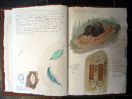
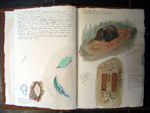

Ian Hamilton Home The Bower Tower Project Bower - related work Fluro works Paintings and Drawings Journals |
|
|
 | |
Published Writings Other Stories Biography / CV |
|
|
 |
Bower related work
heysen sculpture 2008 palmer sculptures 2008-on
Time allows the elaboration of basic urges and / or forms

Male bowerbirds have no role in nest building, but do construct and decorate their own edifices. In the case of the Golden Bowerbird these resemble twin towers joined by a bridge. Other bowerbirds build tunnel-like avenues. Ian Hamilton has taken these forms as the basis for the exploration and elaboration of three-dimensional forms using sticks found in the suburbs in which he lives.
EXOTIC shapes rise sinuously from the walls and floor in Ian Hamilton's exhibition Out of the Forest explorations. Inspired by the workings and habits of the Golden Bowerbird, whose restricted habitat of North Queensland's highland rainforests is in decline, the works both speak as a metaphor for the struggle of the artist to create order out of chaos and the struggle of the bird to survive.
The 'bower' of the bird is the dominant inspiration for this series of works with variously wrought forms created from the earth and twigs of wood woven together meticulously in an extension of the bird's traditional offering to his mate.
Ian also places around the walls, large Giclee print images, digitally produced on a canvas surface, an appropriate ground for the intricately woven views of Hamilton's other works.'Bower', Ephemara in the Mist, Paluma, North Queensland, November 2010 photos by Leo Davis
'INTANGIBLES IN TERRA AUSTRALIS' Australian Art Exhibition 16 April - 13 June 2010 SalaKubo-Kutxa, San Sebastian, Spain Installation shots at SalaKubo-Kutxa, San Sebastian, Spain
'Maypole for the Golden Bowerbird'. 120 cm high X 110 cm long X 70 cm wide eucalyptus sticks, papier-mâché, oil, varnish, 2008 (rebuilt 2009) 'Maquette for the Golden Bowerbird', 90cm high X 70 cm long X 35 cm wide eucalyptus sticks, papier-mâché, oil, varnish, 2008'Abstract Bower', 50 cm high X 80 cm long X 30 cm wide eucalyptus sticks, papier-mâché, oil, varnish, 2009
Tower # 1, 190 cm X 110 cm
Giclee print on canvas, 2008Tower # 3, 210 cm X 110 cm
Giclee print on canvas, 2008
Perc Tucker Regional Gallery Townsville, Queensland 13 Feb - 23 March 2009Installation in Perc Tucker Regional Gallery Installation in Perc Tucker Regional Gallery Installation in Perc Tucker Regional Gallery Installation "Out of the Forest' in Mildura Regional Gallery 2005
Out of the Forest
Review by jacqui stock, Townsville Bulletin, 5 March 2009
EXOTIC shapes rise sinuously from the walls and floor in Ian Hamilton's exhibition Out of the Forest at Perc Tucker Regional Gallery.
Inspired by the workings and habits of the Golden Bowerbird, whose restricted habitat of North Queensland's highland rainforests is in decline, the works both speak as a metaphor for the struggle of the artist to create order out of chaos and the struggle of the bird to survive.
!n Bird Man the viewer can see Hamilton's total immersion in the project which has captured his focus for much of the past 40 years and has resulted in many fine artworks both sculptural and print oriented.
The 'bower' of the bird is the dominant inspiration for this series of works with variously wrought forms created from the earth and twigs of wood woven together meticulously in an extension of the bird's traditional offering to his mate.
This is clearly seen in the large sculptural forms, such as Twin Tower and Three Tower, spaced on plinths across the gallery floor.
Twin Towers I and 2 cast sinister shadows across the walls as if to warn or the danger to these beautiful birds, as global warming and habitat destruction take their toll.
Around the walls are large Giclee print images, digitally produced on a canvas surface, an appropriate ground for the intricately woven views of Hamilton's other works, giving the viewer a chance to further appreciate the precision and beauty of the floor works. Two display cases hold the artist's sketchbooks, each in itself a work of art, showing the extensive research undertaken to produce the works.
Hamilton's exhibition is complemented with images by such renowned artists as Elizabeth Gould, Tate Adams, Jim Cox and Clifton Pugh, all drawn from the Perc Tucker's own extensive collection.Journal, pen and ink, 2014 Journal, pen and ink, 2014
Journal, pen and ink, 2014
concept drawing for Palmer Biennial 2010
Manipulated photos from Palmer Biennial and Hahndorf exhibition. Original photos Leo Davis, manipulation Ian Hamilton
Drawing for fluoro tube and sticks from bower of Golden Bowerbird Journal drawing Page from journal showing sketches for bower' of Great Bowerbird, Townsville
Bower of Great Bowerbird, Townsville. Photo Leo Davis
drawing showing Golden Bowerbird structure' - from field notes and sketches' drawing showing Golden Bowerbird structure - from field notes and sketches'
drawing showing Golden Bowerbird structure - from field notes and sketches'
BACK